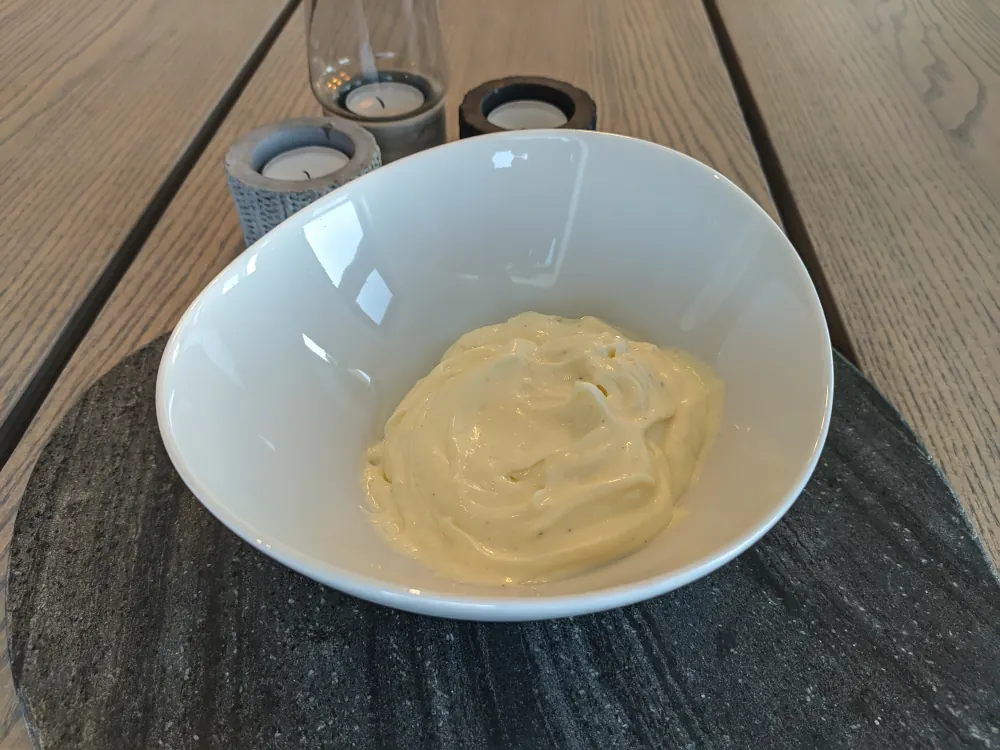

Aioli Recipe

Description:
Mayonnaise with Garlic in it.
Ingredients
- One whole egg or 2 egg yolks, preferrably cool.
- 1 Cup of neutral oil.
- 1-2 tbsp vinegar or lemon juice.
- 1 tbsp pickle juice (optional).
- 2-4 Cloves Garlic.
- 1 tsp Dijon Mustard.
Steps
- Place egg, vinegar, mustard a pinch of salt and pepper in a beaker or narrow and tall container. Add diced garlic for aioli.
- Add oil as the very last ingredient. It should be on the top of the other ingredients, or the mayonnaise/aioli could seperate.
- Place hand blender at the very bottom. Don’t start it yet.
- Use full power, and work your way upwards slowly until all the oil is mixed in.
- Rinse and repeat the previous step until the tray is nearly full or you are running low on béchamel.
- Feel free to taste and mix in extra spices and vinegar afterwards.